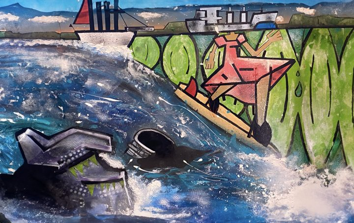
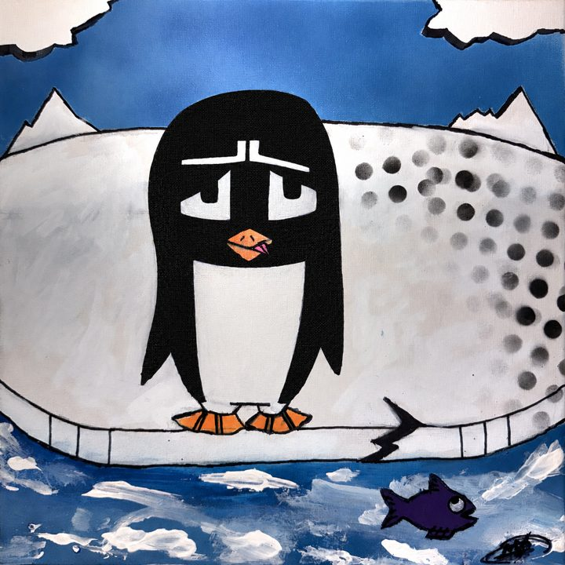

← back home
FROG 2012 BOOTHOOFD SURFER 2023 PENGUIN 2024
Paintings
Spray paint, acrylic and marker on canvas. Tap a painting to see it big.


Spray paint, acrylic and marker on canvas. Tap a painting to see it big.

